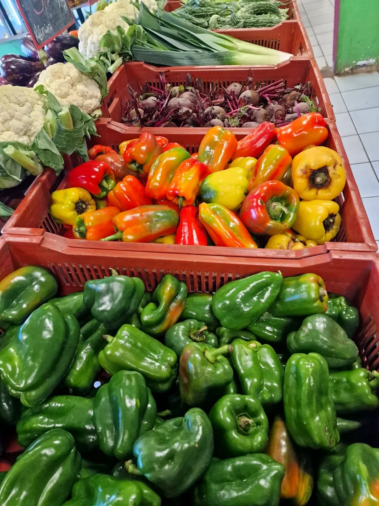
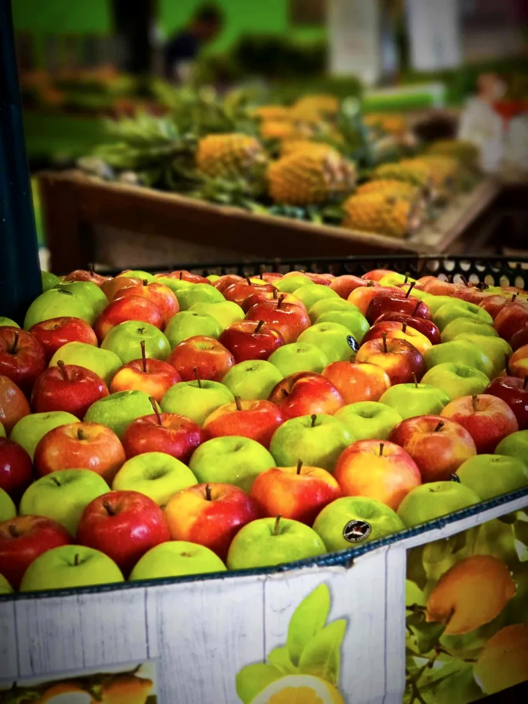
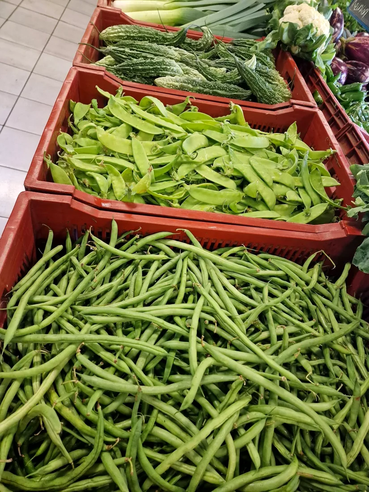
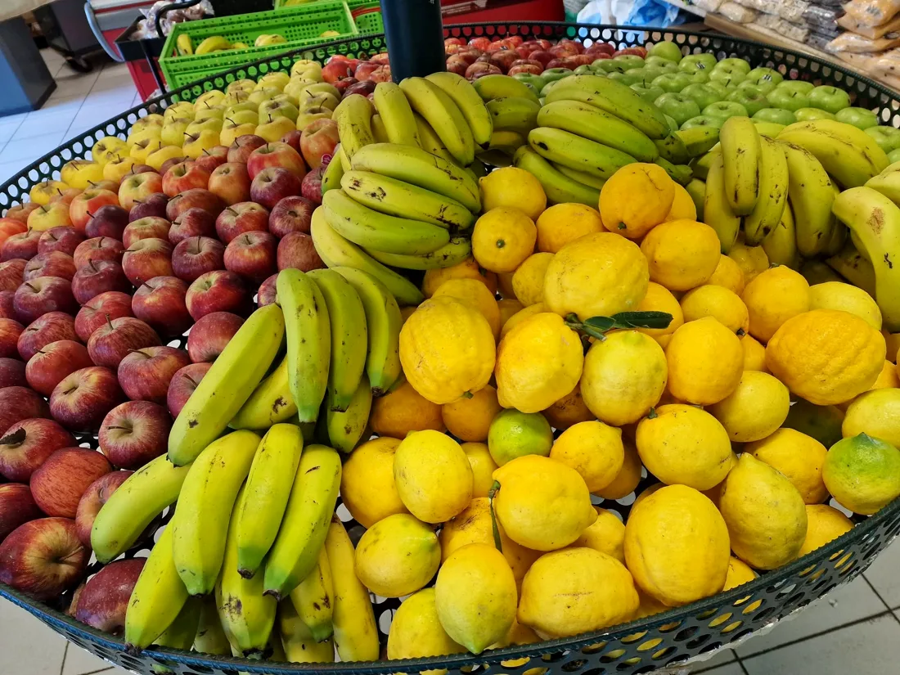
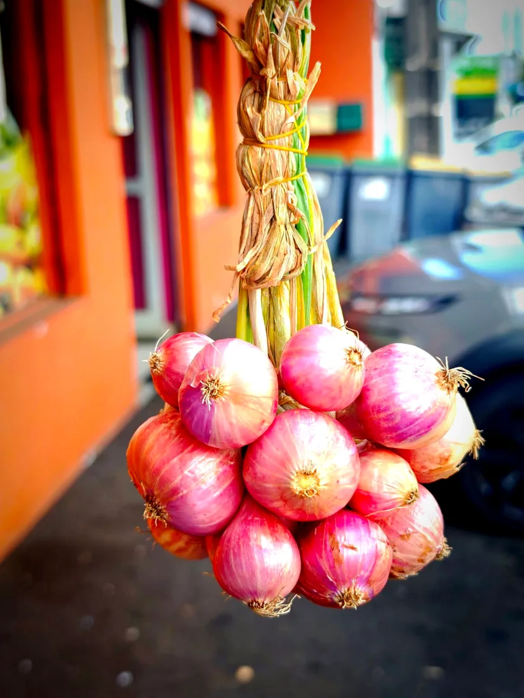
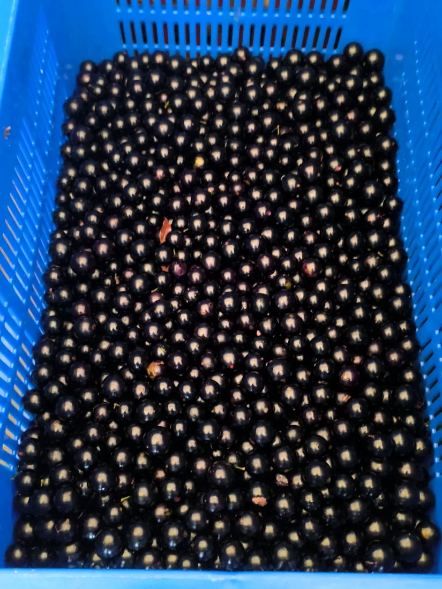
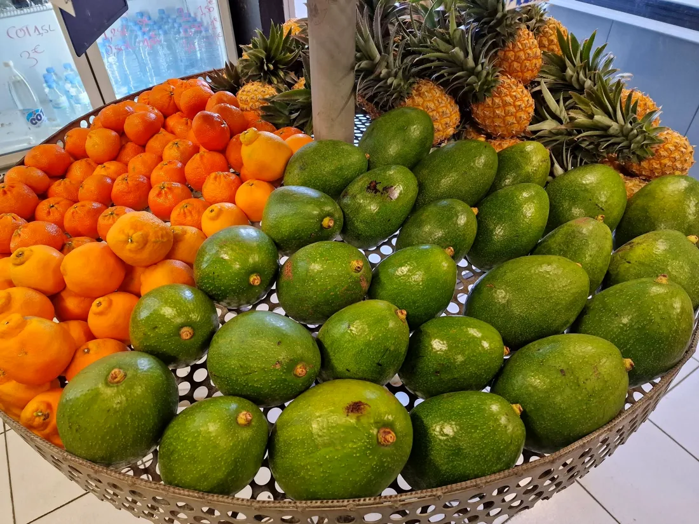
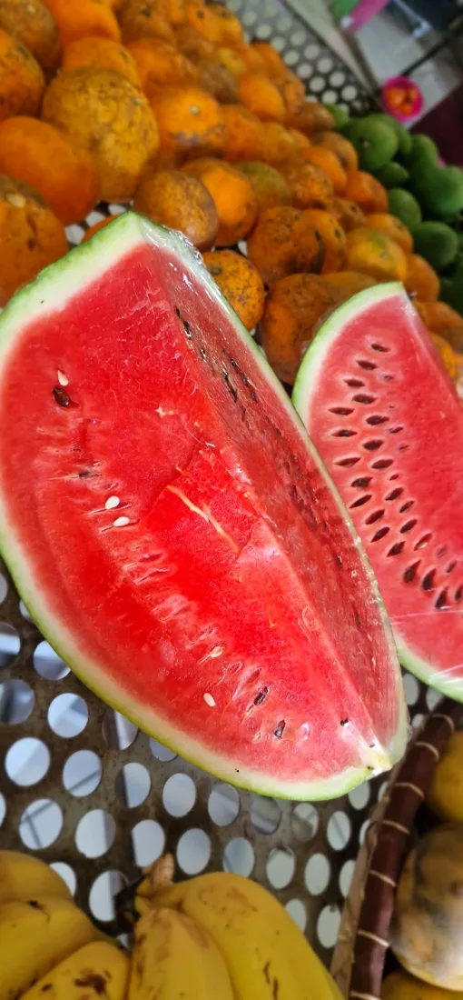

Fruits & légumes
Les couleurs du jour, des légumes du quotidien aux fruits de saison.
Fruits & légumes · Charcuterie artisanale · Épicerie
Au 39 avenue Jean Jaurès, à Saint-Benoît : les beaux produits du jour, une histoire de famille et toujours le sourire.
Notre histoire
Le commerce se transmet de parents à enfants, et ça se voit : on choisit les produits avec soin, on se taquine entre frères, et on accueille chaque client comme un voisin.
« Derrière notre commerce, une histoire de famille, transmise par nos parents. »Fraîcheur Des Plaines, sur sa page


Dans la boutique
Tout ce qu'il faut pour remplir le panier de la semaine, au même endroit.

Les couleurs du jour, des légumes du quotidien aux fruits de saison.
De quoi composer un bon carry ou un rougail à la maison.

Les essentiels et l'alimentation divers, pour compléter vos courses.
Ça vient d'arriver
Vous les attendez avec impatience ? On les annonce ici dès qu'ils arrivent à la boutique.



Faites glisser pour voir les autres →
Le grand débat
« Mi lance le débat : comment zot y appel ça zot ? » La question a fait réagir toute la page. Et vous, vous êtes de quelle équipe ?

Une question sur un arrivage, une commande à mettre de côté ? Un appel ou un message suffit.